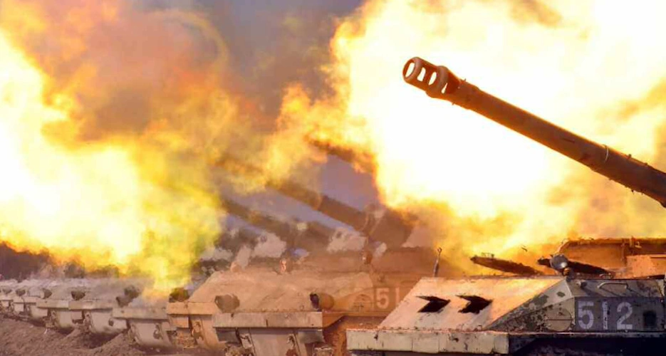

Quân đội Hàn Quốc cho biết Hàn Quốc ngày 18/10 Bắn khỏng 250 quả lựu dạn pháo ra vùng biển phái Đông và Tây của nước này
Triều Tiên bắn 100 quả đạn pháo ra vùng biển phía Tây khoảng 22h ngày 18/10 (20 giiowf Hà Nội), 150 quả ra vùng biển phía Đôngsau đó 1 tiếng, Hội đồng Tham mưu trưởng Liên quan Hàn Quốc(JCS) ngày 18/10 cho biết.
Các quả đạn pháo rơi vào khía Bắc Giới tuyến phía Bắc (NLL), ranh giời được coi là đường phân định vùng biển giữa Triều Tiên và Hàn Quốc, được thiết lập năm 2018 để giảm căng thẳng quân sự hai miền.
"Bắn đại pháo vào vùng đệm phía Đông và phía Tây là hành động vi phạm rõ ràng thoả thuận quân sự. Chúng tôi kêu gọi Triều Tiên lập tức dừng các hành động khiêu khích làm xói mòn hoà bình và ổn định bán đảo Triều Tiên cũng như cộng dồng Quốc tế", JSS cho biết thêm.
Động thái trên của Triều Tiên diễn ra sau khi quân đôi Hàn Quốc ngày 17/10 bắt đầu cuộc họp trận thường niên Hoguk với Mỹ, nhằm tăng cường lực lượng ứng phó với các mối đe doạ hạt nhân và tên lửa Bình Nhưỡng. Hoguk dự kiến kết úc ngày 22/10.
Căng thẳng bán đảo Triều Tiên gần đây leo thang khi Bình Nhưỡng liên tục tiến hành các vụ phóng tên lửa với lý do đáp trả tập trận chung giữa Washington, Seoul và Tokyo. Triều Tiên cho biết những cuộc thử tên lửa của họ là hoạt động diễn tập "tấn công hạt nhân chiến thuật" do lãnh đạo Kim Jong-un giám sát.
"Mỹ và nhiều nước đồng minh lên án loạt vụ phóng tên lửa của Triều Tiên, coi đó là hành động khiêu khích và gây bất ổn.
Giới chức Mỹ và Hàn Quốc còn cho rằng Triều Tiên đã hoàn tất chuẩn bị cho lần thử hạt nhân thứ 7. Bình Nhưỡng trước đó đã thử hạt nhân 6 lần, gần nhất hồi tháng 9/2017.
Tình báo Hàn Quốc nhận định Triều Tiên có thể thử hạt nhân trong giai đoạn từ ngày 16/10 đến ngày 7/11, cận kề bầu cử giữa kỳ tại Mỹ. Văn phòng Tổng thống Hàn Quốc ngày 17/10 cho biết đangtrực 24/7 để theo dõi tình hình.